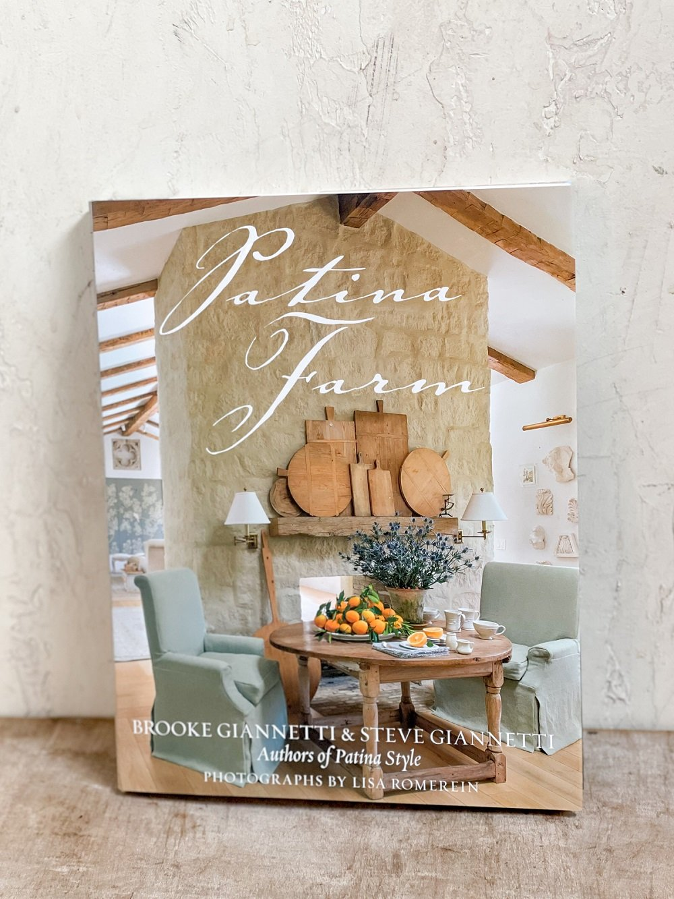

Patina Farm Home
When I was younger one of the coffee books we always had laying around our home was called Patina Farm. I knew the book cover like the back of my hand as I passed it by daily. I never really cared to open it though because I thought it was just some boring book my Mom had bought. Years later when I started to have an interest in interior design, I had a phone conversation with my mom where she brought up that coffee table book. I ended up doing some research online and found that the book contained pictures of one of the most beautiful homes I had ever seen. Patina Farm is a private residence located in Ventura County, CA. In 2013, Steve and Brooke Giannetti built and designed this farm home with French and Belgian influences.
What I love most about this home is the way it feels like you’re stepping into the past. This interior design style heavily draws from antique styles and feels like you’re time traveling in Europe. I have not had the chance to visit it but even from the pictures there is a calming presence about the home. Especially the neutral color palette. Colors are a strong force in design as each one carries different connotations and can influence one’s thoughts and feelings. Patina Farm is filled with various shades of gray, brown, blue, and green. According to my research online, gray illustrates balance, brown stirs feelings of security and is a reminder of nature, along with green, and blue is associated with serenity. All of these colors work together to remind its inhabitants of the outdoors and the calming presence that brings. I am definitely a sucker for a neutral color palette and this one knocks it out of the park. The color choices are so subtle yet create a beautiful space that is pleasing to the eyes and kind to the mind and soul.